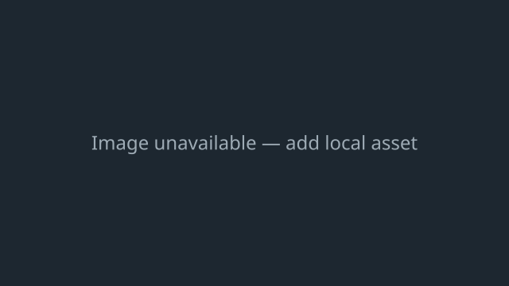

Chair
From Build Logic Remake Wiki
| Chair | |
|---|---|
 | |
| Overview | |
| In-game Description | Sit and relax. This block can be painted. |
| Creation Date | unknown |
| Release Date | unknown |
| Color | None |
| Inputs | 0 |
| Outputs | 0 |
| Properties | |
| Destructible? | Yes |
| Paintable? | Yes |
| Movable? | Yes |
| Editable? | No |
| Item ID | 71 |
| Encoded Name | , |
| Placement & Mechanics | |
| Sticky? | No |
| Stickable? | Yes |
| Placeable on walls? | Yes |
Overview
The Chair is the first block in Decoration. It is used for sitting and relaxing.
Functions
If you walk up to it, as long as there's no one already occupying the Chair, you will sit on it.